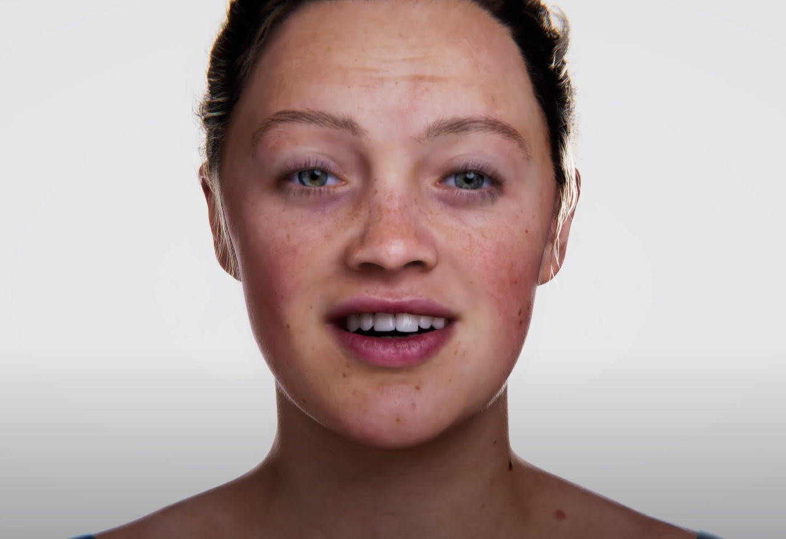
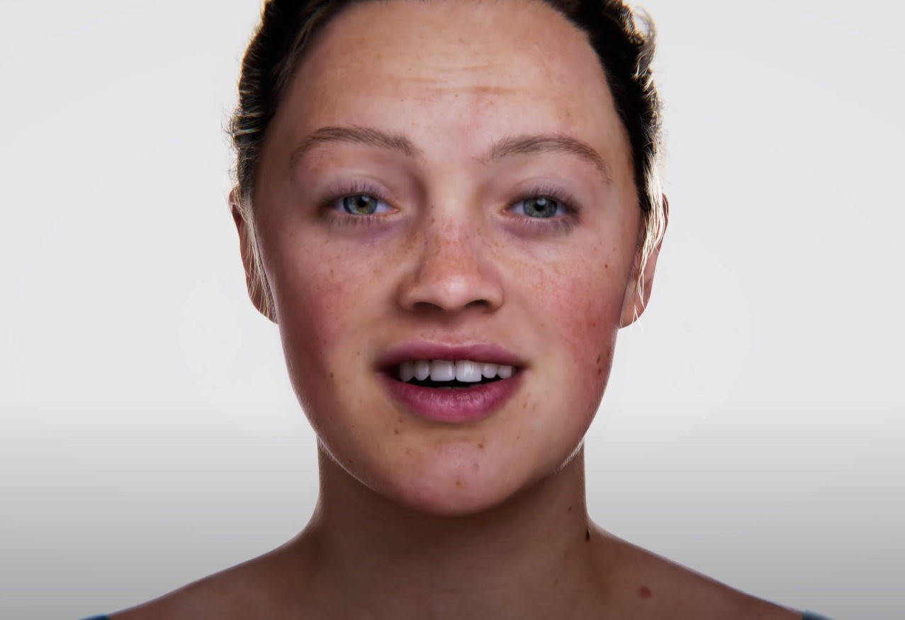

Quesque qu'une veille_tech ?
Une veille technologie est une façon de ce documenté sur un sujet afin de connaitre les dernières évolutions de celui-ci. Cela permet de se tenir informé en cas de changement de ses outils de travail ou de ces méthodes.

Qu’elles sont les méthodes utiliser pour une veille Technologique ?
Version Push:
Cette méthode est utilisée pour que les informations viennent à nous automatiquement ce qui a la particularité d’être rapide Mais susceptible d’être surinformé.
Version Pull:
Cette méthode consiste à faire soi-même les recherches et donc de retenir les informations pertinentes Mais qui as pour défaut de faire des recherches quotidiennement.

C’est quoi unity3D ?
Unity est un moteur de jeu spécialisé en 2D et 3D qui a été créer en 2008 par l’entreprise Unity Technologies. Unity possède comme particularité d’être multiplateforme (smartphone, Mac, PC, consoles de jeux vidéo et web). Il a la particularité de proposer une licence gratuite dite « Personal » avec quelques limitations de technologie avancée au niveau de l'éditeur, mais sans limitation au niveau du moteur. Unity a été créer avec le langage C# et C++ mais pour coder il peut supporter les langages C#, boo ou javascript les jeu et se sert d’un asset store pour proposer aux créateurs une diversité de choix afin de rajouté des supports au jeu, des sons, des texture et également des animations.

Pourquoi j’ai choisi ce logiciel pour ma veille technologique ?
J’ai choisi Unity comme logiciel car je me suis lancé dans la conception d’un jeu avec. Je suis parti sans connaissances en ce qui concerne Unity donc il fallait que j’apprenne en autodidacte le fonctionnement et de me confronter à des problèmes afin de me mettre en condition professionnel.

Les derniéres nouveautés

 

Unity montre enfin la puissance du moteur 3D qui vas séduire les développeurs qui sont en train de miser sur les technologies de demain. Avec cette vidéo de 2 minutes, on constate que Unity n'a rien à envier aux outils de l'Unreal Engine 5, notamment en matière de rendu 3 avec des modèles d'un photoréalisme assez hallucinant. Vidéo
Unity et Netmarble F&C coopére pour mettre en œuvre “Metaverse World”, une plate-forme basée sur la blockchain qui englobe les jeux, les humains numériques, le divertissement, le contenu et le commerce. Le moteur de jeu d’Unity est utilisé pour créer des jeux vidéo de réalité virtuelle et de réalité augmentée et d’autres simulations. Netmarble a réalisé des investissements pour diversifier son champ d’activité en une société mondiale de divertissement métaverse par le biais de liens commerciaux ou de l’acquisition d’autres sociétés.
Unity annonce avoir racheté Ziva Dynamics, spécialiste de la simulation destinée aux personnages humains et aux créatures. Cette aquisition fait suite à une longue série de rachats de la part de Unity : les technologies de Weta Digital en fin d’année dernière, mais aussi SpeedTree (outil de végétation) l’été passé, SyncSketch, Pixyz, RestAR… Si Ziva Dynamics dispose de capacités variées, permettant par exemple de simuler la peau et les muscles d’un lion numérique, c’est très clairement l’usage pour les humains que Unity met le plus en avant. On sent assez clairement que le groupe répond ici aux MetaHumans d’Epic Games.